Hello, hello! This is a simple page dedicated to exposing Softsense - A
"company" ran by an 11 year old. Imagine a 10 year old owning a company.
It will be a mess (and possibly illegal), right?

Every good company needs a website, right? Well, Windows 8 Lover (The founder of Softsense), by tradition, made a website… in Google Sites.
The website has a page with… Softsense PCs? Actually, it's a scam. The images there are of Fingers PCs with the Softsense logo.
If you buy the expensive one you get 1 year of Star AI, but only if you choose StarOS Ultimate. (by the way, the AI doesn't exist.)

After a few months, he decided to make a “website on his own”. And so he wasted hours using ChatGPT to “code” his website. He also claimed to have "learned html" from a stupid android app. And so, here is the “final product”.


Softsense finally released its first product - an antivirus, that wasn't even an antivirus.
In fact, it was made using Thunkable, a no-code app building platform that allows users to create powerful native mobile apps without writing any code. You can watch the video made by Cra-Z on that here.


Before we start, I want to clarify that Windows 10.5 is a great Windows mod. We'll be talking about Softsense's Windows 10.5.
Windows 8 Lover (8.1 Lover at the time) just randomly decided that Windows 10.5 is his own mod...


The so-called StarOS is actually just Windows 10 with his "self made software", which by running wireshark and opening all of the apps, found out that they're actually websites.
The setup itself was trying to hide the fact that you were actually installing Windows.

And when i clicked on "Install now", i was greeted to this Gaber Samir-like monstrosity:

Now back to the "self made software", when we ran Wireshark to see what websites the apps were redirecting to, we found it all out. Below, i will list the link to all of the websites that i managed to find, and i will also explain what they do.

This website simply "tells your system specs". However, almost the entire page is lying.
First, I am using a Chromium based browser. I thought it was supposed to show my browser name, not my browser agent!
The screen resolution is a lie too! It actually is the resolution of the browser window.
Second, i have 8gb of RAM, not 0.5.
And at last, i have 12 cores in my PC.
This "app" claims to clean your system. But it's actually just showing you random files that don't exist on your PC, and "deletes them".
Now when i was inspecting the source code of this "cleaner", i have came across the obvious proof that it was actually made by ChatGPT.

And while i was inspecting the source code further, i have found out that the cleaner is indeed fake, since it has a function to generate random files that don't even exist on the system.

There was also a sound that played once you clicked on the clean files button. It's hard to notie it playing, so here it is.

It looks fine and all, but the code...


Here it's just the classical 3 games: Snake, Tetris and Tic-Tac-Toe.
Now while i was writing the StarOS part for this document, the "Company Owner" thought his copyright website took our website down. Neither does he know, he spelt the URL wrong.

After the ultimate downfall of Softsense, he randomly found some quotes that "would make his company popular" and decided to spam them on his X account.
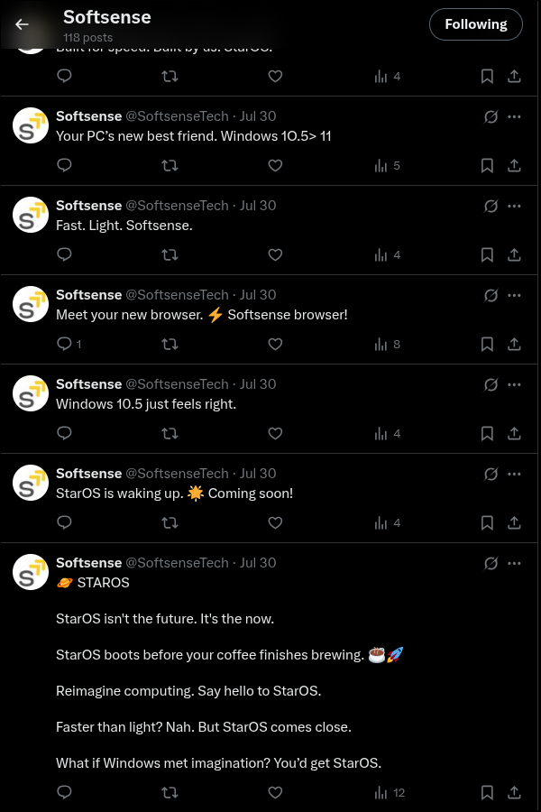 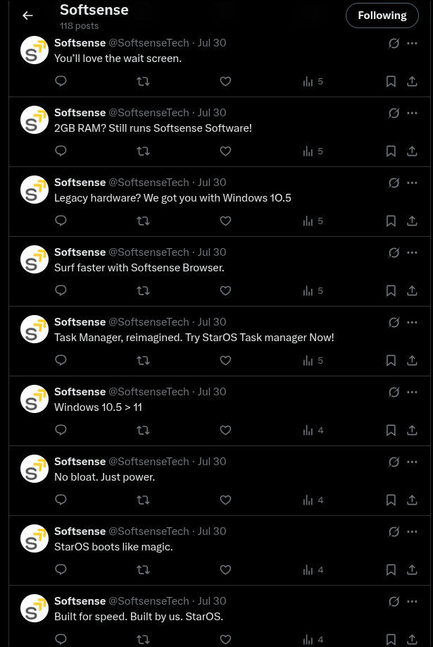 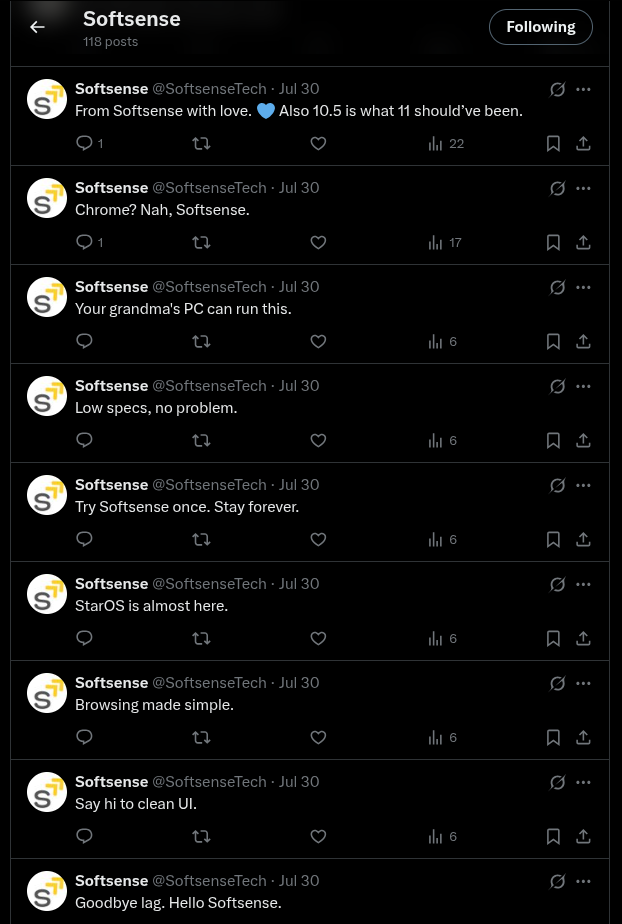 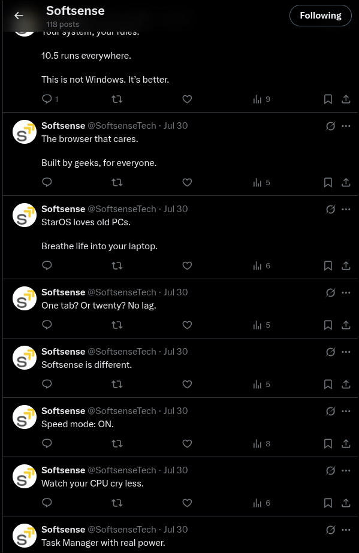 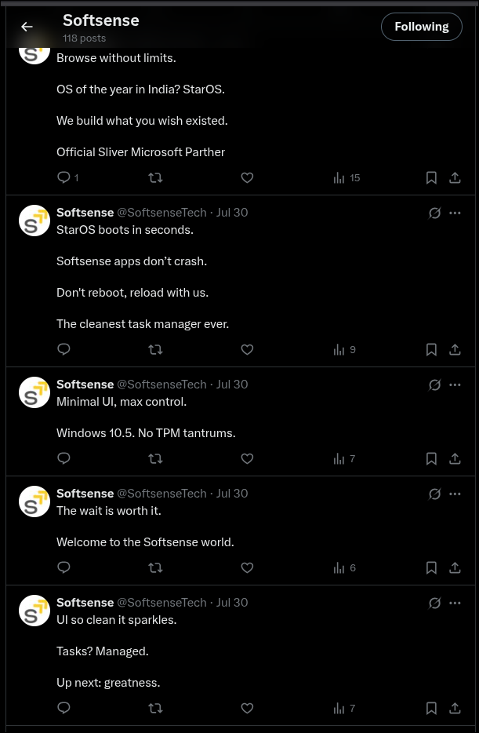 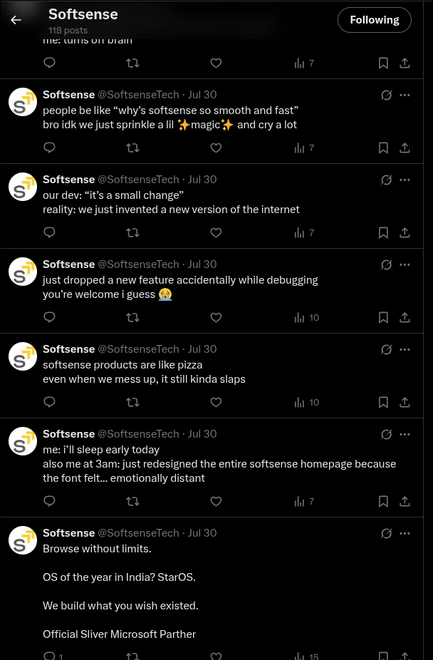 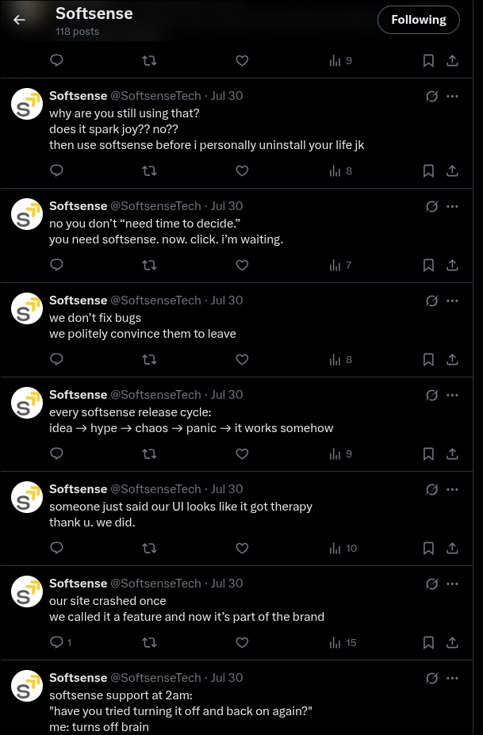 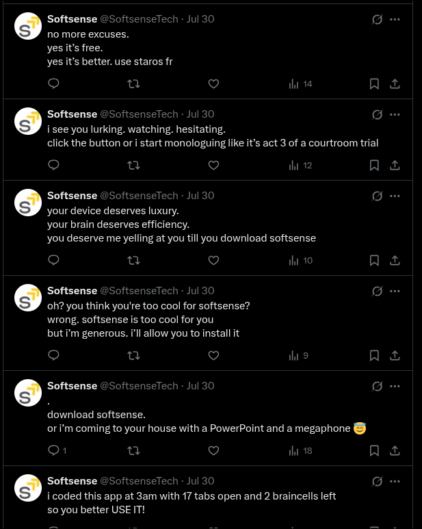 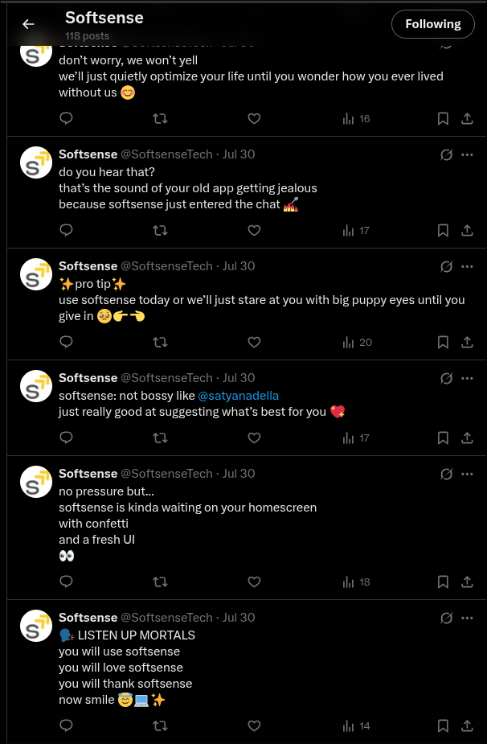 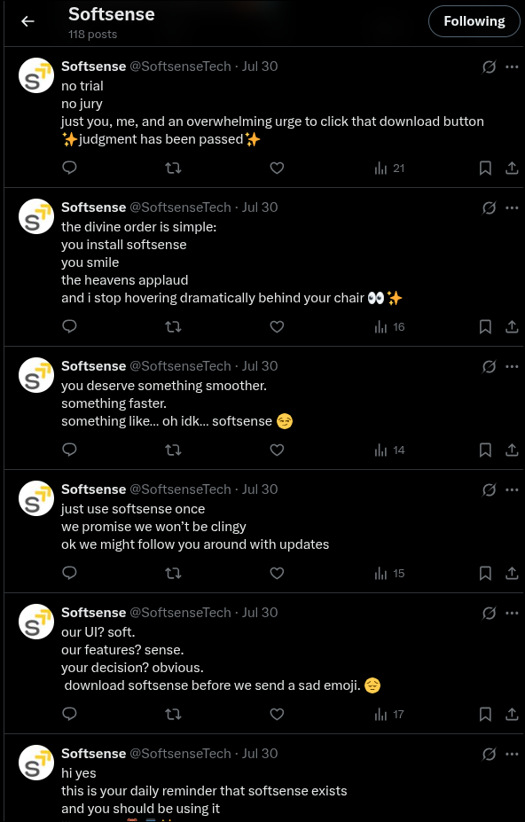 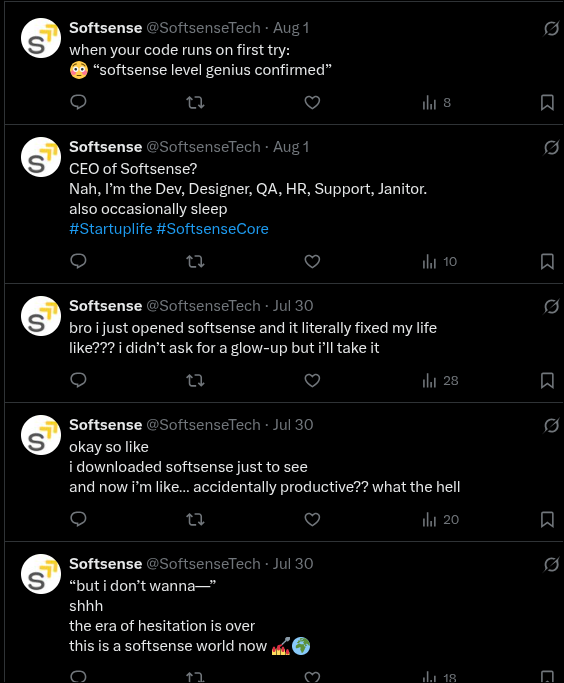 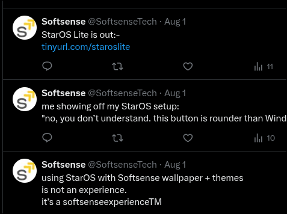Those "quotes" didn't get him anywhere near popular, but right after that, he made an AI generated website for the mod that he randomly decided is his. (Windows 10.5)
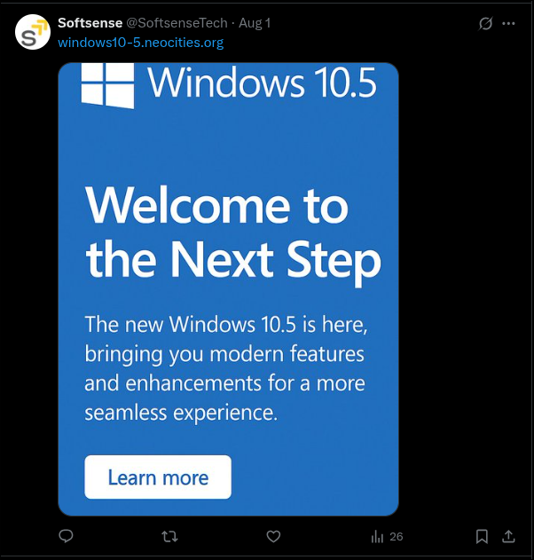And what do you know, he used ChatGPT for this one aswell.
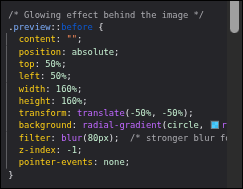Also by doing a bit of more inspect elementing, i found out that he is using Discord's CDN to host the images for the website.
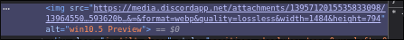If youre living under a rock or you have never used Discord before, you may know that all CDN link expire after 2 days. So basically the website has no screenshots and no logo aswell.
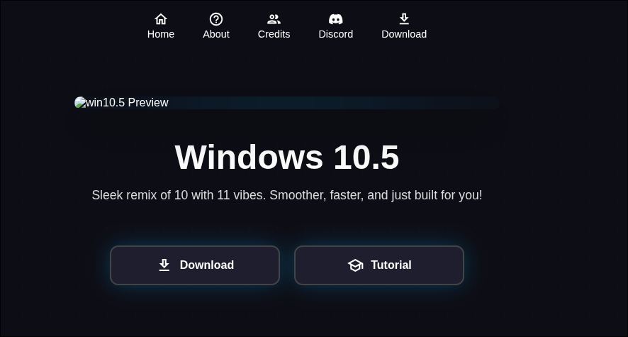The tutoeial and the website looks fine in general. I'll leave a link here soon if you want to look at it for yourself.